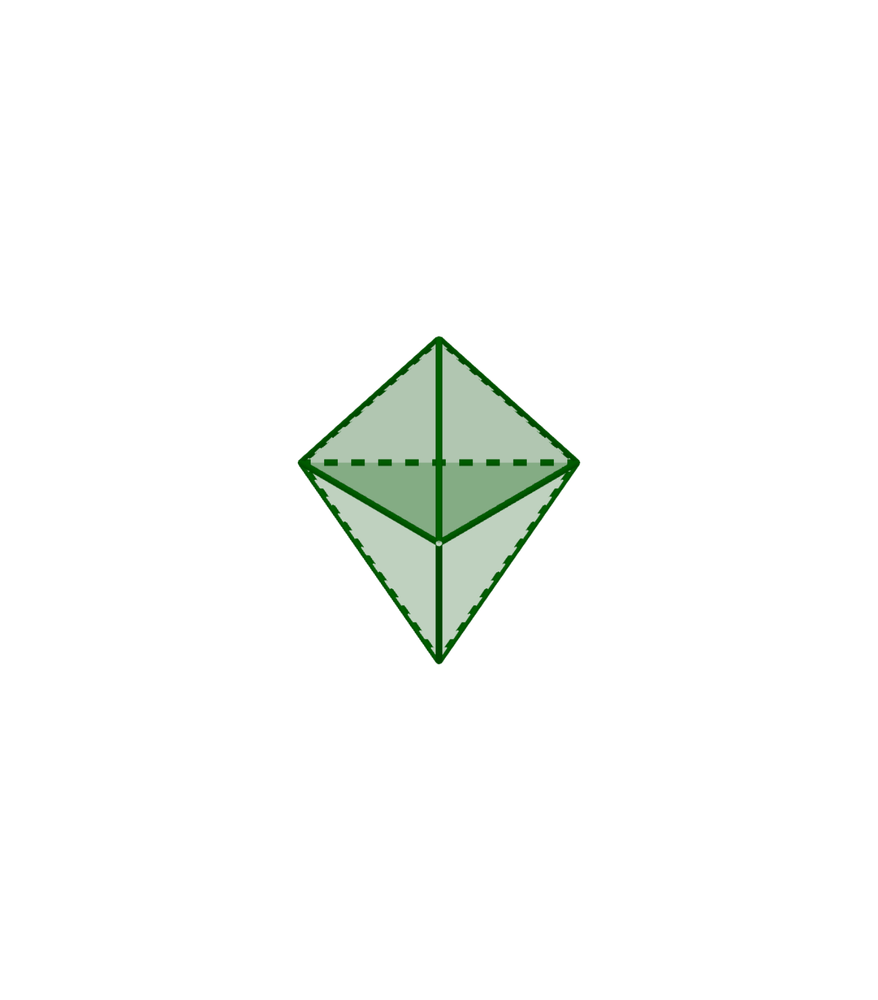
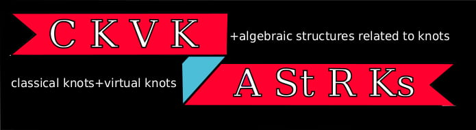

Learning seminar on quantum topology and related topics
This is an informal and convivial space whose main goal is to learn and discuss about low-dimensional topology and related topics. People who are completely new to the subject are very welcome to join us. If you would like to receive information about our activities please write an email to
- Anderson Vera (BK21 Four Mathematical Science division at POSTECH)
- Minkyoung Song (Center for Research in Topology at POSTECH)
- Yifan Li (IBS-CGP)
Spring, 2022

During this season of the Learning seminar we will focus on the study of quantum invariants
of 3-manifolds by using Temperley-Lieb algebras. We will follow closely the book:
- “Temperley-Lieb Recoupling Theory and Invariants of 3-Manifolds” by Louis H. Kauffman and Sóstenes L. Lins)
Our main goal is understanding the definition of Turaev-Viro and Reshetikhin-Turaev
invariants and their explicit computation. In particular we will learn about:
- Kauffman bracket and Temperley-Lieb algebras.
- Triangulations, spines and Heegaard splitings of 3-manifolds.
- Turaev-Viro invariants.
- Reshetikhin-Turaev invariants.
Here is a more detailed introduction.
If you are interested in receiving information about this seminar please register here.
Below is the schedule of the talks as well as some notes or videos.
| Speaker | Time | Topic | Archive |
|---|
2021
During this year we studied the theory of quantum and Vassiliev invariants of knots and their relations through the Kontsevich integral. Our main references were the books:
- “An introduction to Quantum and Vassiliev Knot invariants” by David M. Jackson and Iain Moffat.
- “Quantum Invariants. A study of knots, 3-manifolds and their sets” by Tomotada Ohstuki.
Below is the schedule of the talks as well as some notes or videos.
| Speaker | Time | Topic | Archive | |
|---|---|---|---|---|
| Seonhwa Kim (SNU) | 13/07 | Basic knot theory and some knot invariants | ||
| Minkyoung Song (IBS-CGP) | 20/07 | Braids and its R-matrix representations | ||
| Anderson Vera (Postech) | 27/07 | Knot invariants through R-matrix representations | Video1, video2 | |
| Yifan Li (IBS-CGP) | 03/08 | Operator invariants of tangles | Video, note | |
| Yong-Geun Oh (IBS-CGP, Postech) | 10/08 | Ribbon Hopf algebras I | ||
| Yong-Geun Oh (IBS-CGP, Postech) | 17/08 | Ribbon Hopf algebras II | ||
| Anderson Vera (Postech) | 24/08 | Ribbon Hopf algebras III | Video1, video2 | |
| Yifan Li (IBS-CGP) | 31/08 | Turaev-Reshetikhin invariants | Video, note | |
| Minkyoung Song (IBS-CGP) | 06/09 | Fundamentals of Vassiliev invariants | Video | |
| Seonhwa Kim (SNU) | 13/09 | Chord diagrams I | ||
| Seonhwa Kim (SNU) | 27/09 | Chord diagrams II | ||
| Yifan Li (IBS-CGP) | 18/10 | Jacobi diagrams I | Video, note | |
| Anderson Vera (Postech) | 25/10 | Jacobi diagrams II | Video | |
| Myeong-Sang Cho (Postech) | 01/11 | Lie algebra weight systems I | Video | |
| Myeong-Sang Cho (Postech) | 08/11 | Lie algebra weight systems II | Video | |
| Anderson Vera (Postech) | 29/11 | q-tangles and Jacobi diagrams on 1-manifols I | ||
| Anderson Vera (Postech) | 06/12 | q-tangles and Jacobi diagrams on 1-manifols II | Video | |
| Yifan Li (IBS-CGP) | 13/10 | Construction of Kontsevich Integral | Video, note | |
| Seonhwa Kim (SNU) | 20/12 | Universality properties of Kontsevich Invariants | ||
| Xinxing Tang (BIMSA) | 21/12 | The KZ equations and the Drinfel’d associator I | Video | |
| Xinxing Tang (BIMSA) | 22/12 | The KZ equations and the Drinfel’d associator II | Video, note |
News/Links
News/Related links
- Sino-Russian Mathematics Center-JLU Colloquium (Jan, 2022)
- Nicolai Reshetikhin, Quantum groups and Invariants of 3-manifolds (Spring, 2022)
-  Classical knots, virtual knots and algebraic structures related to knots, The Ohio State University
- [K-OS] Knot Online Seminar , CNRS, Université de Paris, Universität Regensburg